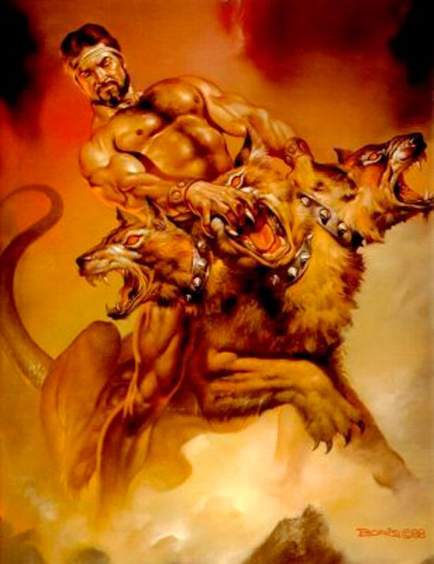

Mitos Griegos
¡Adentrate en el mito!
La Fuente

La mitología griega está formada por un conjunto de leyendas que provienen de la religión de la Grecia Clásica.
Los dioses del panteón griego adoptaban figuras humanas y personificaban las fuerzas del Universo; al igual que los hombres, dioses helenos eran impredecibles, por eso unas veces tenían un estricto sentido de la justicia y otras eran crueles y vengativos; su favor se alcanzaba a través de actos de sacrificios y de piedad, pero no siempre funcionaba ya que los dioses eran muy volubles.
La mitología griega es absolutamente compleja, llena de dioses, monstruos, guerras y dioses entrometidos.
Algunos estudiosos afirman que llegó a haber hasta 30.000 divinidades en total.
Cosmología
Los «mitos de creación» empiezan con el Caos, un profundo vacío. De este emergió Gea (la Tierra) y algunos otros seres divinos primordiales: Eros (Amor), el Abismo (Tártaro) y el Érebo.
Sin ayuda masculina, Gea dio a luz a Urano (el Cielo), que entonces la fertilizó. De esta unión nacieron primero los Titanes, los Cíclopes y por último los Hecatónquiros. Cronos, «el más joven, de mente retorcida, el más terrible de los hijos de Gea» castró a su padre y se convirtió en el gobernante de los dioses con su hermana y esposa Rea como consorte y los otros Titanes como su corte. Generalmente la tradición griega señala que de esta castración, surgió Afrodita, emergida del mar, tras caer los testículos de su padre sobre el océano.
El tema de conflicto padre-hijo se repitió cuando Cronos se enfrentó con su hijo, Zeus. Tras haber traicionado a su padre, Cronos temía que su descendencia hiciera lo mismo, por lo que cada vez que Rea daba a luz un hijo, él lo secuestraba y se los tragaba. Rea lo odiaba y lo engañó escondiendo a Zeus, el último de sus hijos, y envolviendo una piedra en pañales, que Crono se tragó. Rea crio a Zeus en el monte Ida de Creta, siendo alimentado por una cabra, cuando Zeus creció, dio a su padre un veneno que lo obligó a vomitar a sus hermanos y a la piedra, que habían permanecido en el estómago de Crono todo el tiempo.
Galeria
Ares

Athenea
Poseidon
Artemisa
La Era Heroica
La mitología griega culmina en la Guerra de Troya, la lucha entre los griegos (aqueos) y los troyanos, incluyendo sus causas y consecuencias. En las obras de Homero las principales historias ya han tomado forma y sustancia, y los temas individuales fueron elaborados más tarde, especialmente en los dramas griegos. La Guerra de Troya atrajo también gran interés en la cultura romana debido a la historia del héroe troyano Eneas, cuyo viaje desde Troya llevó a la fundación de la ciudad que un día se convertiría en Roma, recogida por Virgilio en la Eneida (cuyo Libro II contiene el relato más conocido del saqueo de Troya).
El ciclo de la Guerra de Troya, una colección de poemas épicos, comienza con los sucesos que desencadenaron la guerra: Eris y la manzana dorada ‘para la más bella’ (kallisti), el juicio de Paris, el rapto de Helena y el sacrificio de Ifigenia en Áulide. Para rescatar a Helena, los griegos organizaron una gran expedición bajo el mando del hermano de Menelao, Agamenón, rey de Argos o Micenas, pero los troyanos se negaron a liberarla. La Ilíada, que se desarrolla en el décimo año de la guerra, cuenta la disputa de Agamenón con Aquiles, que era el mejor guerrero griego, y las consiguientes muertes en batalla del amigo de Aquiles, Patroclo, y del hijo mayor de Príamo, Héctor.
Tras la muerte de este se unieron a los troyanos dos exóticos aliados: Pentesilea, reina de las Amazonas, y Memnón, rey de los etíopes e hijo de la diosa de la aurora Eos. Aquiles mató a ambos, pero Paris logró entonces matarlo con una flecha en el talón, la única parte de su cuerpo vulnerable a las armas humanas. Antes de que pudieran tomar Troya, los griegos tuvieron que robar de la ciudadela la imagen de madera de Palas Atenea (el Paladio). Finalmente, con la ayuda de Atenea construyeron el caballo de Troya. A pesar de las advertencias de la hija de Príamo, Casandra, los troyanos fueron convencidos por Sinón, un griego que había fingido su deserción, para llevar el caballo dentro de las murallas de Troya como ofrenda para Atenea. El sacerdote Laocoonte, que intentó destruir el caballo, fue muerto por serpientes marinas. Al anochecer la flota griega regresó y los guerreros del caballo abrieron las puertas de la ciudad.
En el completo saqueo que siguió, Príamo y sus restantes hijos fueron asesinados, pasando las mujeres troyanas a ser esclavas en varias ciudades de Grecia. Los aventurados viajes de regreso de los líderes griegos (incluidos los vagabundeos de Odiseo y Eneas, y el asesinato de Agamenón) fueron narrados en dos épicas, los Regresos (Nostoi, hoy perdida) y la Odisea de Homero.
La única épica helenística conservada, las Argonáuticas de Apolonio de Rodas (poeta épico, investigador y director de la Biblioteca de Alejandría) narra el mito del viaje de Jasón y los Argonautas para recuperar el vellocino de oro de la mítica tierra de Cólquida. En las Argonáuticas Jasón es empujado a su búsqueda por el rey Pelias, quien recibe una profecía sobre un hombre con una sandalia que sería su némesis. Jasón pierde una sandalia en un río, llegando a la corte de Pelias e iniciando así la épica.
los miembros de la siguiente generación de héroes, además de Heracles, fueron con Jasón en el Argo para buscar el vellocino de oro. Esta generación también incluía a Teseo, que fue a Creta a matar al Minotauro, a la heroína Atalanta y a Meleagro, que una vez tuvo un ciclo épico propio que rivalizaba con la Ilíada y la Odisea. Píndaro, Apolonio y Apolodoro se esforzaron en dar listas completas de los Argonautas.
Aunque Apolonio escribió su poema en el siglo III a. C., la composición de la historia de los Argonautas es anterior a la Odisea, que muestra familiaridad con las hazañas de Jasón (las andanzas de Odiseo pueden haber estado parcialmente basadas en ellas).En épocas antiguas la expedición se consideraba un hecho histórico, un incidente en la apertura del mar Negro al comercio y la colonización griegas.También fue extremadamente popular, constituyendo un ciclo al que se adjuntaron muchas leyendas locales. En particular, la historia de Medea cautivó la imaginación de los poetas trágicos.
Hijo de Zeus y de una mortal llamada Aicmena, esposa de un valiente guerrero llamado Anfitrión por el que Zeus se hizo pasar para yacer con ella. Anfitrión también lo hizo, después de volver de una batalla, y entonces Aicmena tuvo unos mellizos.
Uno de los mellizos, Hércules, era hijo de Zeus. El otro, Ificles, era hijo de su esposo. Por la genealogía, Hércules era nieto de Perseo y Zeus juró que iba a ser un gran rey. Hera, su esposa, descubrió la infidelidad de Zeus y desde entonces no ahorró esfuerzos para hacerle daño al pequeño.
Según lo cuenta el mito de Hércules, este demostró tener una fuerza descomunal desde muy pequeño. Hera mandó dos serpientes para atacarlo, siendo apenas un bebé, y él las mató con sus propias manos.
Pronto se hizo famoso por sus alucinantes hazañas y sus notables habilidades. El rey Creonte le concedió la mano de su hija, Megara, cuando Hércules le cortó la nariz y las orejas a unos recaudadores de impuestos que tenían sometidos a los tebanos. Hera, que siempre estaba atenta a hacerle daño al héroe, hizo que este tuviera un ataque de locura. Durante el mismo, mató a su esposa y a los cuatro hijos que ya tenía con ella. Al recobrar la conciencia, sintió profundo dolor y vergüenza por lo que había hecho.
Tiempo después, su hermano Ificles le sugirió ir a consultar el Oráculo de Delfos para que este le impusiera una pena que le permitiera expiar la terrible acción que había cometido. Cuenta el mito de Hércules que el héroe lo escuchó y así lo hizo. La sibila del oráculo le impuso entonces 12 fabulosos trabajos que debía completar.
Una vez cumplidos los doce trabajos, dice el mito de Hércules que el héroe fue liberado de su culpa. Vivió muchas otras aventuras, hasta que murió debido al engaño de un centauro. Zeus lo llevó al Olimpo y logró que Hera lo adoptara como a su propio hijo. Así, Hércules se convirtió en el portero del cielo.
